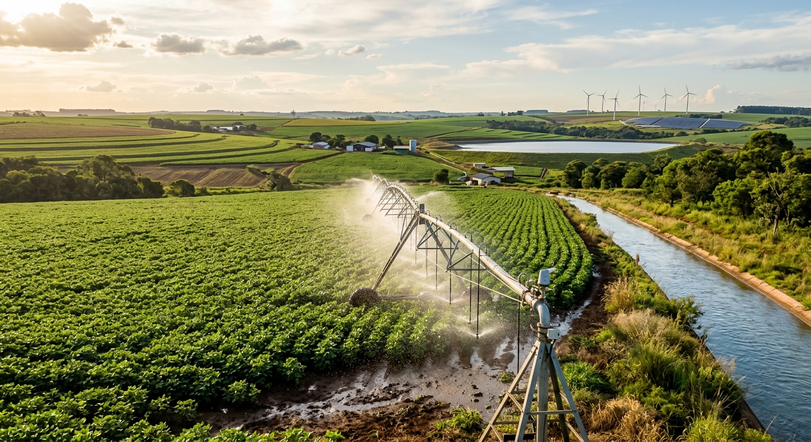
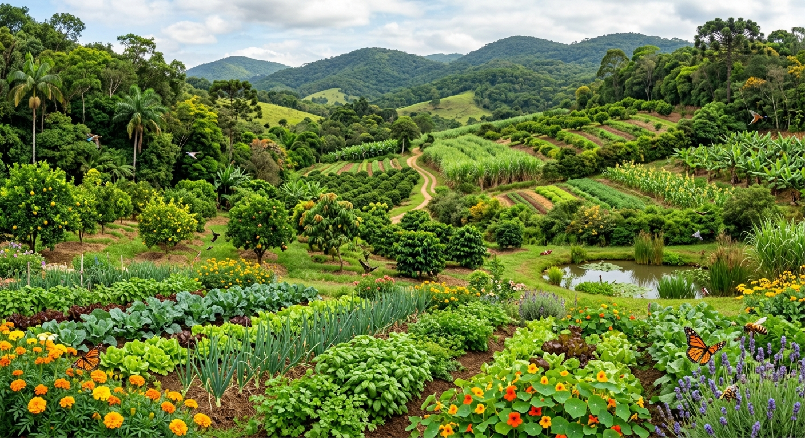
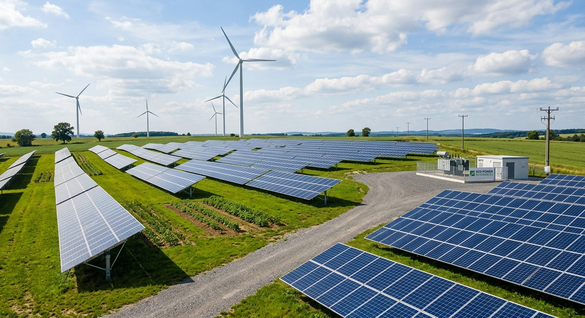
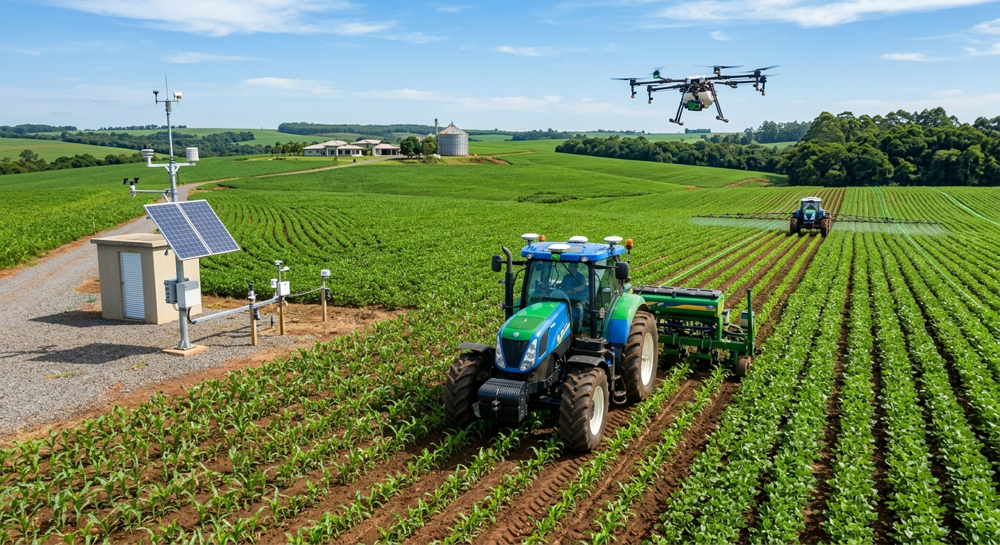

01
Rotação de culturas
Alternar diferentes culturas em uma mesma área ao longo das safras pode contribuir para a conservação do solo, melhorar a diversidade de plantas e auxiliar no manejo de determinados problemas agrícolas.
O agro sustentável busca produzir alimentos, matérias-primas e energia de maneira eficiente, conciliando desenvolvimento econômico, responsabilidade social e preservação dos recursos naturais.
ENTENDENDO O TEMA
A agricultura e a pecuária possuem um papel fundamental para a sociedade. São responsáveis por fornecer grande parte dos alimentos que chegam diariamente à mesa das pessoas e também por fornecer matérias-primas utilizadas em diferentes setores da economia.
Entretanto, a produção agropecuária depende diretamente dos recursos naturais. Solo, água, biodiversidade e condições climáticas são elementos fundamentais para a produção. Por isso, utilizar esses recursos de maneira responsável é essencial para garantir que as próximas gerações também possam produzir.
O agro sustentável procura justamente equilibrar essas necessidades. A proposta não é simplesmente produzir menos, mas produzir melhor: utilizar tecnologias, planejamento e boas práticas para aumentar a eficiência e, ao mesmo tempo, reduzir os impactos ambientais.
Conservar a qualidade e a fertilidade do solo.
Utilizar a água de forma eficiente e responsável.
Proteger espécies, habitats e ecossistemas.
Promover qualidade de vida e desenvolvimento rural.

A água é indispensável para a produção agrícola. Ela participa do desenvolvimento das plantas, da criação de animais e de diversas atividades realizadas nas propriedades rurais. Porém, a disponibilidade de água não é ilimitada e diferentes regiões podem enfrentar períodos de escassez.
Por esse motivo, a agricultura sustentável procura aumentar a eficiência do uso da água. Sistemas de irrigação bem planejados, monitoramento da umidade do solo, aproveitamento da água da chuva e manutenção adequada dos equipamentos são algumas das estratégias que podem diminuir desperdícios.
Além disso, conservar nascentes, matas ciliares e áreas de vegetação próximas aos cursos de água ajuda a proteger os recursos hídricos. A conservação da água não beneficia apenas a propriedade rural, mas também as comunidades e os ecossistemas que dependem dela.

Biodiversidade é a variedade de seres vivos existentes em determinado ambiente. Ela inclui plantas, animais, microrganismos e os diferentes ecossistemas presentes em uma região.
No campo, a biodiversidade possui uma relação direta com a produção. Abelhas e outros polinizadores, por exemplo, participam da reprodução de muitas espécies vegetais. Organismos presentes no solo também contribuem para a decomposição da matéria orgânica e para a ciclagem de nutrientes.
A preservação de áreas de vegetação nativa, a manutenção de corredores ecológicos e a diversificação das culturas são estratégias que podem contribuir para a conservação da biodiversidade dentro e ao redor das propriedades rurais.
Dessa maneira, preservar a biodiversidade não deve ser visto como algo separado da agricultura. Um ambiente equilibrado pode oferecer serviços ecossistêmicos importantes para a própria produção agrícola.
A sustentabilidade no campo pode ser alcançada por meio de diferentes estratégias. Não existe uma única solução: cada propriedade deve considerar suas características, condições ambientais e necessidades de produção.
Alternar diferentes culturas em uma mesma área ao longo das safras pode contribuir para a conservação do solo, melhorar a diversidade de plantas e auxiliar no manejo de determinados problemas agrícolas.
O sistema de plantio direto procura reduzir o revolvimento do solo e manter resíduos vegetais sobre sua superfície. A prática pode ajudar na conservação do solo e da água e reduzir processos erosivos.
Sistemas como a integração lavoura-pecuária-floresta combinam diferentes componentes produtivos e podem aumentar a eficiência do uso da terra e diversificar a produção.
O manejo integrado busca utilizar diferentes métodos para controlar pragas, considerando o monitoramento das populações e a necessidade real de intervenção.
A análise do solo e o planejamento da adubação ajudam a fornecer nutrientes de acordo com as necessidades das culturas, evitando aplicações desnecessárias.
Práticas conservacionistas procuram diminuir a erosão, proteger a estrutura do solo e manter sua capacidade produtiva ao longo do tempo.
A utilização de fontes renováveis é outra possibilidade dentro da agricultura sustentável. A energia solar, por exemplo, pode ser utilizada em propriedades rurais para alimentar equipamentos, sistemas de bombeamento de água, iluminação e outras atividades.
A energia produzida a partir de resíduos agrícolas e pecuários também pode ser aproveitada. O biogás gerado pela decomposição de matéria orgânica pode ser utilizado para produção de energia, além de contribuir para o aproveitamento de resíduos.
A adoção de fontes renováveis pode reduzir a dependência de determinadas fontes convencionais de energia e fazer parte de estratégias de eficiência energética nas propriedades rurais.


A tecnologia possui um papel cada vez mais importante na agricultura. Sensores, drones, imagens de satélite, sistemas de posicionamento e softwares de gestão podem fornecer informações que ajudam o produtor a tomar decisões mais precisas.
Esse conjunto de ferramentas está relacionado à chamada agricultura de precisão. Em vez de tratar toda uma área exatamente da mesma maneira, o produtor pode identificar diferenças dentro da propriedade e aplicar determinados recursos de maneira mais direcionada.
A tecnologia, portanto, pode contribuir para aumentar a eficiência no uso de água, fertilizantes, defensivos e combustível. Porém, sua utilização deve estar associada ao conhecimento técnico, ao planejamento e às características de cada propriedade.
Monitoramento das lavouras
Uso mais eficiente dos recursos
Tomada de decisões baseada em dados
Redução de desperdícios
Um sistema agropecuário verdadeiramente sustentável precisa considerar mais do que apenas a produção. É necessário pensar simultaneamente nos aspectos ambientais, econômicos e sociais.
Busca conservar os recursos naturais, proteger a biodiversidade, preservar a qualidade do solo e da água e reduzir impactos ambientais.
A produção precisa ser economicamente viável para que o produtor consiga manter sua atividade e investir em melhorias e novas tecnologias.
A sustentabilidade também envolve trabalho digno, qualidade de vida, segurança alimentar, desenvolvimento das comunidades e valorização das pessoas do campo.
A sustentabilidade no campo começa quando entendemos que produzir alimentos e preservar a natureza não precisam ser objetivos opostos.AGRO SUSTENTÁVEL
Você aprendeu sobre água, biodiversidade, energia, tecnologia e práticas sustentáveis. Agora chegou a hora de descobrir quanto você sabe sobre o assunto!
FONTES BIBLIOGRÁFICAS
Os conteúdos apresentados neste site foram elaborados com base em materiais de instituições reconhecidas nas áreas de agricultura, meio ambiente e desenvolvimento sustentável.
Empresa Brasileira de Pesquisa Agropecuária. Materiais técnicos e publicações sobre agricultura sustentável, conservação do solo, água, sistemas integrados de produção e tecnologias agropecuárias.
Organização das Nações Unidas para a Alimentação e a Agricultura. Publicações e estudos relacionados à agricultura sustentável, segurança alimentar, recursos naturais e sistemas alimentares.
Organização das Nações Unidas. Agenda 2030 e Objetivos de Desenvolvimento Sustentável, com destaque para o ODS 2 — Fome Zero e Agricultura Sustentável — e o ODS 12 — Consumo e Produção Responsáveis.
Ministério da Agricultura e Pecuária. Informações institucionais e materiais relacionados às políticas públicas, produção agropecuária e práticas sustentáveis no setor rural brasileiro.
Intergovernmental Panel on Climate Change. Relatórios científicos sobre mudanças climáticas, impactos ambientais e estratégias de adaptação e mitigação relevantes para sistemas agrícolas.
Brasil. Lei nº 12.651, de 25 de maio de 2012. Dispõe sobre a proteção da vegetação nativa e estabelece normas relacionadas à preservação de áreas ambientais em propriedades rurais.